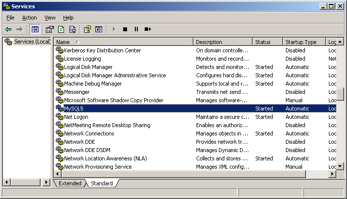

Есть несколько вариантов установки, в зависимости от того, будете ли вы использовать СУБД на своём личном компьютере (что рекомендуется для полноценного освоения), или будете использовать компьютеры института.
Вы можете воспользоваться тем же вариантом, что и для установки на компьютер института, но проще будет использовать специальный инсталлятор. Для установки на личном компьютере вы просто скачиваете с сайта http://dev.mysql.com/downloads/mysql/ MySQL installer - это стандартный установщик, при помощи которого вы установите MySQL так же, как любую другую прогрумму Windows. В процессе установке следует выбрать вариант "Developer Default", чтобы установить полный необходимый вам набор инстурментов. Все остальные параметры можно оставить по умолчанию. Пароль для администратора вы можете придумать сами.
Скачать актуальный дистрибутив СУБД MySQL можно по адресу
https://dev.mysql.com/downloads/mysql/
Нам понадобится вариант Windows (x86, 64-bit), ZIP Archive. Скорее всего, вы так же можете получить
его из сетевого диска, куда его предварительно скопировал преподаватель. В данном случае вы просто
распаковываете скачанный архив к себе на локальный (не сетевой!) диск.
В случае, если вы установили MySQL при помощи инсталлятора, то его запуск и остановка будут осуществляться через управление службами Windows. По умолчанию после установки сервис должен уже работать. 
Управление сервером будет осуществляться из командной строки. Для этого необходимо выполнить следующие команды (перейдя в папку MySQL):
bin\mysqld.exe --initialize --skip-log-syslog --standalone --console
bin\mysqld.exe --skip-log-syslog --standalone --console
Bin\mysql.exe –u root –pи вводим текущий пароль.
SET PASSWORD FOR 'root'@'localhost' = PASSWORD('123');
Не забудьте переподключиться и проверить, что пароль поменялся!
Для работы с базами данных в MySQL необходим пользователь, наделённый такими правами. То есть при подключении к базе данных Вы должны указывать логин пользователя и его пароль, и если доступ ему открыт, то он получит определённые права.
В MySQL существуют три группы привилегий: данные, структура, администрирование. Первая группа связана с изменением записей в таблицах, вторая группа связана с изменением структуры баз данных, а третья связана с администрированием, как бы это очевидно не звучало.
Теперь перейдём к рассмотрению каждой группы отдельно. И начнём с прав на управление данными в таблицах.
Теперь перейдём к привилегиям пользователей MySQL, позволяющие изменять структуру таблицы и базы данных.
И последняя группа привилегий - это привилегии, связанные с администрированием баз данных.
И, наконец, специальные привилегии, связанные с ограничением на доступные ресурсы:
Если значение вышеназванных пределов равны "0", то ресурсы для пользователя не ограничены.
Ранее мы вносили все изменения в настройки MySQL под root-пользователем, имея полный доступ ко всем базам данных. Однако для случаев, когда могут потребоваться более жесткие ограничения, есть способы создания пользователей с особыми наборами прав доступа.
Давайте начнем с создания нового пользователя из консоли MySQL:
CREATE USER 'newuser'@'localhost' IDENTIFIED BY 'password';
К сожалению, на данном этапе пользователь "newuser" не имеет прав делать что-либо с базами данных. На самом деле, даже если если пользователь "newuser" попробует залогиниться (с паролем "password"), он не попадет в консоль MySQL.
Таким образом, первое, что нам необходимо сделать, это предоставить пользователю доступ к информации, которая ему потребуется.
GRANT ALL PRIVILEGES ON * . * TO 'newuser'@'localhost';
Звездочки в этой команде задают базу и таблицу, соответственно, к которым у пользователя будет доступ. Конкретно эта команда позволяет пользователю читать, редактировать, выполнять любые действия над всеми базами данных и таблицами.
Поле завершения настройки прав доступа новых пользователей, убедитесь, что вы обновили все права доступа:
FLUSH PRIVILEGES;
Теперь ваши изменения вступят в силу.
Для назначения прав конкретному пользователю можно использовать следующую схему:
GRANT [тип прав] ON [название базы данных].[название таблицы] TO ‘[имя пользователя]’@'localhost’;
Если вы хотите дать доступ к любой базе данных или к любой таблице, поставьте звездочку (*) вместо названия базы данных или таблицы.
Каждый раз, когда вы изменяете права доступа, не забудьте использовать команду Flush Privileges.
Лишения прав доступа практически идентично их назначению:
REVOKE [тип прав] ON [название базы данных].[название таблицы] FROM ‘[имя пользователя]’@‘localhost’;
По аналогии с использованием команды DROP для удаления базы данных, вы можете использовать эту команду и для удаления пользователя.
DROP USER ‘demo’@‘localhost’;
Для тестирования учетной записи созданного пользователя, разлогиньтесь с помощью команды:
quit
и залогиньтесь снова, введя в терминате следующую команду:
mysql -u [имя пользователя]-p
В состав дистрибутива MySQL входят следующие утилиты:
Утилиты mysqld и mysql были подробно рассмотрены ранее, поэтому возвращаться к ним не будем. Кратко рассмотрим остальные.
Утилита для администрирования сервера. Может использоваться администратором, а также некоторыми пользователями, которым предоставлены определенные привилегии, например – Reload_priv, Shutdown_priv, Process_priv и File_priv. Данная команда может использоваться для создания баз данных, изменения пароля пользователя(администратор может изменить пароль любому пользователю, а рядовой пользователь – только свой собственный), перезагрузки и остановки сервера, просмотра списка процессов, запущенных на сервере. Mysqladmin поддерживает следующие команды:
Пример использования mysqladmin для изменения пароля:
mysqladmin -u your_name password your_passСледует заметить, что в случае использования mysqladmin для установки пароля, не требуется использование функции password().Mysqladmin сам заботится о шифровании пароля.
mysqlaccess [host] [user] [db] опцииПолезная утилита для проверки прав доступа пользователя, если он получает сообщение Access denied, при попытке соединиться с базой данных. Опции:
mysqlshow [опции] [database [table [field]]]Mysqlshow может использовать следующие параметры:
mysqlshow
mysqlshow mysql
Вы можете направить вывод mysqldump в клиентскую программу MySQL, чтобы копировать базу данных. ПРИМЕЧАНИЕ: Вы должны убедиться, что база данных не изменяется в это время, иначе Вы получите противоречивую копию!
Для справки:
mysqldump -u root -p mysql user>mysql-1.sql
mysqldump -u root mysql>mysql-2.sql
Примечание флаг –p используется в случае, если пользователь наделен паролем.
После выполнения этой команды появился файл mysql-1.sql и mysql-2.sql. Загрузите их в текстовый
редактор, чтобы поподробнее изучить.